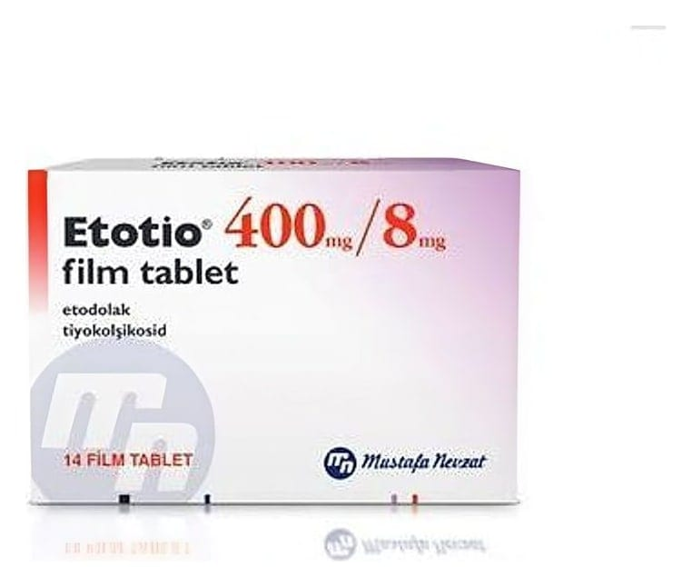

Etotio 400 mg/8 mg Film Kaplı Tablet, Film Tablet, 14 Adet

Ne için kullanılır
KT · Bölüm 1ETOTİO, etkin madde olarak Etodolak ve Tiyokolşikosid içeren beyaz ya da beyazımsı renkli, oblong film kaplı tablettir.
ETOTİO, 14 film kaplı tablet içeren blister ambalajlarda karton kutu içerisinde takdim edilir.
ETOTİO; osteoartrit (kireçlenme), omurganın (vertebral kolonun) ağrılı sendromları, eklem dışı romatizma, ağrılı kas kasılmalarının semptomatik tedavisinde, travma ve ameliyat sonrasında oluşan ağrılarda kullanılır.